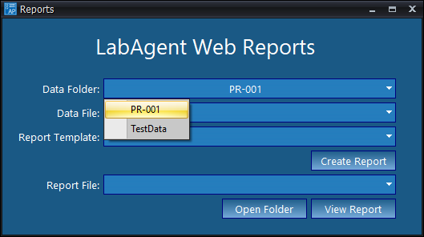
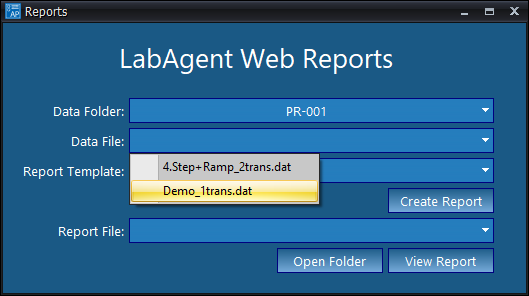
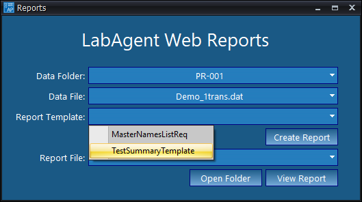
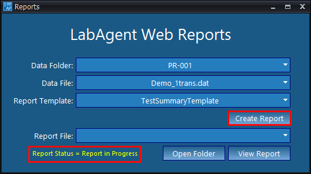
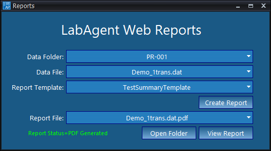
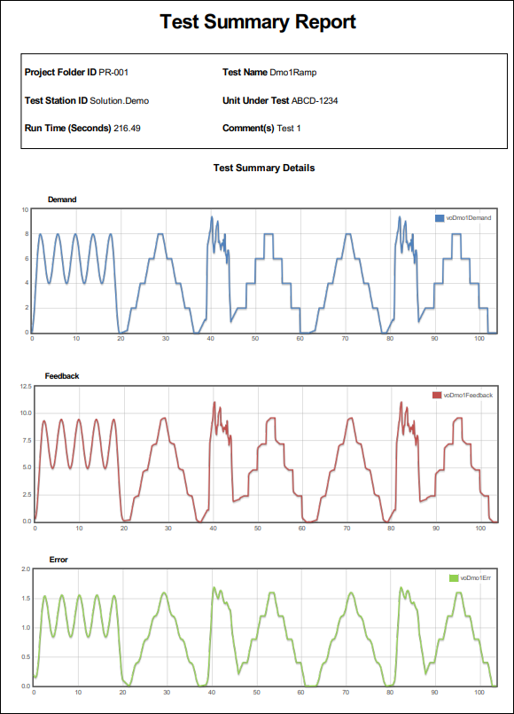

iTest User's Guide
iTest includes the ability to create reports using test result data. This feature is based on LabAgent's WebReport feature. Report templates can be created in SolutionBuilder or LabCentral.
As supplied, iTest include a simple default report template. Only .wrpt templates can be viewed and edited in SolutionBuilder; the .xml type templates available from LabCentral can be useful when reports are fixed and should not be edited.
 |
NOTE: | SolutionBuilder can create and edit .wrpt template files. LabCentral can create and edit both .xml and .wrpt type templates. |
|
NOTE: | This is an example from Solution.Demo. This may not be included in every solution. |
LabAgent Web Reports uses LabAgent's functionality to generate PDF reports. When LabAgent WebReports is launched, LabAgent is automatically started if it is not already running.
To generate a Web Report using LabAgent WebReports, do the following:
After running a test in AutomationPanel, click the Generate Report button located on the Main layout. The Reports dialog displays.
Generate Report Button
Use the Data Folder drop-down menu to select a project folder. This folder will be used to determine which data files can be used to generate your Web Report.
Data Folder

Use the Data File drop-down menu to select a .dat file to generate your Web Report.
Data File

Use the Report Template drop-down menu to select a template for your Web Report.
Report Template

Click the Create Report button to generate your Web Report. The status of the report is indicated below the Report File field. Once generated, the Web Report will appear in the Report File drop-down menu.
Create Report

To open the file location, click Open Folder. The Web Report PDF file is saved in the same location as its corresponding .dat file. To open the Web Report PDF, click the View Report button.
Report File

The PDF will load in a new window.
Summary Report PDF
